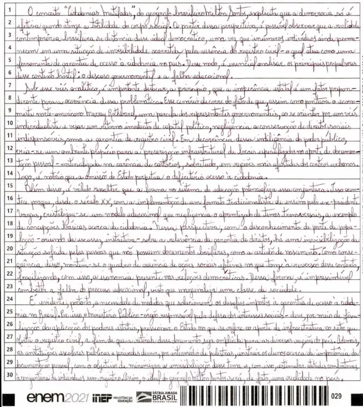

Professor
Temas e turmas
Publique um tema, vincule à turma e disponibilize o texto de apoio. O aluno encontra tudo organizado em um só lugar.
- Banco de temas por turma
- Material de apoio em anexo
- Publicação imediata no painel do aluno
Caderno editorial de redações
A RedaçãoPro reúne temas por turma, envio em imagem, marcação de trechos e notas por competência. Acompanhe a proposta publicada, envie sua redação e receba a correção com apontamentos claros sobre cada trecho.
Use “Reiniciar caderno” para voltar ao ponto de partida.
Trecho selecionado na imagem e associado à competência.

“A escola é um espaço de construção de sentidos.”
Comentário publicado · +40 pontos
O caderno
Professor
Publique um tema, vincule à turma e disponibilize o texto de apoio. O aluno encontra tudo organizado em um só lugar.
Correção
Arraste sobre a redação para destacar trechos, associe competências e registre notas com parecer.
Aluno
A devolutiva volta para o aluno com a imagem marcada, a nota final e os apontamentos de cada competência.
Roteiro de validação
Escolha a turma, escreva a proposta e anexe o texto de apoio.
Abra “Temas de Redação”, consulte o apoio e envie a imagem em “Meus Envios”.
Selecione os trechos na imagem, vincule competências e atribua as notas.
Veja a nota final, o parecer e os comentários sobre a própria redação.
Confira indicadores e gerencie os perfis usados na demonstração.
Vozes do caderno
“Consigo ver onde perdi pontos sem precisar decifrar um PDF. O trecho marcado na imagem deixa isso claro.”
“Marco o trecho e a nota por competência fica junto. A devolutiva sai pronta no mesmo encontro.”
“Em poucos minutos dá para acompanhar o ciclo completo: o tema chega, a redação é enviada e a correção volta com apontamentos.”
Planos de demonstração
Os três perfis mostram o mesmo fluxo sob pontos de vista diferentes. Escolha o caderno do aluno, do professor ou da gestão.
Starter
R$ 29,90/mês
Até 10 alunos.
Professional
R$ 59,90/mês
Até 50 alunos.
Sob consulta
modalidade destinada a instituições.
Última página
Você pode percorrer o roteiro quantas vezes quiser. O botão “Reiniciar caderno” devolve tudo ao estado inicial.